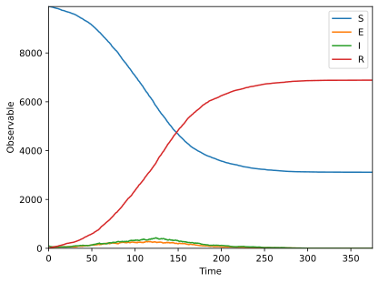
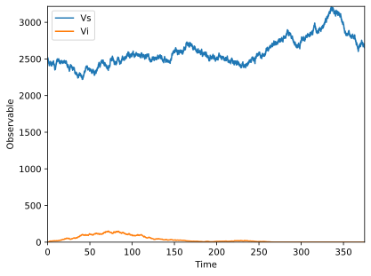
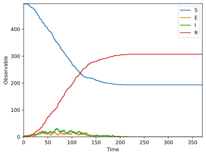
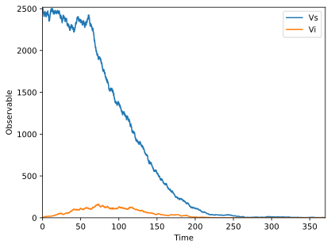

Vector-borne disease¶
[1]:
from pykappa import System
The following model is adapted from “Rule-based epidemic models” by Waites et al. We simulate a simple vector-borne disease which can travel between both mosquitoes (V(x{s i})) and hosts (P(x{s e i r})). The disease progresses: hosts are initially susceptible (x{s}) to the disease, later become exposed after coming in contact with a mosquito (x{e}), are infected (x{i}), and eventually recover (x{r}).
[2]:
INIT_M=50_000 # intial number of mosquitoes;
INIT_N=10_000 # total host population, of which...
INIT_I=100 # are initially infectious, and
INIT_S=INIT_N - INIT_I # are initially susceptible
variables = {
"beta": "0.036", # probability of infection from a bite
"bprime": "1", # proabability of a vector becoming infectious
"alpha": "0.2", # progression from exposed to infectious
"gamma": "0.1429", # progression from infectious to removed
"kappa": "1.0", # bites per day per mosquito
"kb": "0.1429", # birth rate
"kd": "0.1429", # death rate
"water": "1" # amount of breeding habitat available
}
rules = [
"P(x{e}) -> P(x{i}) @ 'alpha'", # disease progression
"P(x{i}) -> P(x{r}) @ 'gamma'", # disease recovery
"V(), . -> V(), V(x{s}) @ 'water' * 'kb'", # vector birth
"V() -> . @ 'kd'", # vector annihilation
# both hosts and vectors can be infected from a bite event
"P(x{i}), V(x{s}) -> P(x{i}), V(x{i}) @ 'bprime' * 'kappa' / 'M'",
"V(x{i}), P(x{s}) -> V(x{i}), P(x{e}) @ 'beta' * 'kappa' / 'N'"
]
observables = {
"N": "|P()|",
"S": "|P(x{s})|",
"E": "|P(x{e})|",
"I": "|P(x{i})|",
"R": "|P(x{r})|",
"M": "|V()|",
"Vs": "|V(x{s})|",
"Vi": "|V(x{i})|"
}
system = System.from_kappa(
mixture={"P(x{i})": INIT_I, "P(x{s})": INIT_S, "V(x{s})": INIT_M},
rules=rules,
variables=variables,
observables=observables,
seed=42
)
We run the simulation for 375 time units:
[3]:
while system.time < 375:
system.update()
We plot the numbers of hosts each disease progression state over time. The system eventually equilibriates; the disease is wiped out.
[4]:
system.monitor.plot(combined=True, observables=["S", "E", "I", "R"]);
/opt/hostedtoolcache/Python/3.12.13/x64/lib/python3.12/site-packages/IPython/core/events.py:100: UserWarning: Creating legend with loc="best" can be slow with large amounts of data.
func(*args, **kwargs)
/opt/hostedtoolcache/Python/3.12.13/x64/lib/python3.12/site-packages/IPython/core/pylabtools.py:170: UserWarning: Creating legend with loc="best" can be slow with large amounts of data.
fig.canvas.print_figure(bytes_io, **kw)

All infected vectors eventually perish:
[5]:
system.monitor.plot(combined=True, observables=["Vs", "Vi"]);

Now we regenerate the system from scratch in order to demonstrate the impact of an environmental intervention.
[6]:
system = System.from_kappa(
mixture={"P(x{i})": INIT_I, "P(x{s})": INIT_S, "V(x{s})": INIT_M},
rules=rules,
variables=variables,
observables=observables,
seed=42
)
Every sixty time units, we remove water from the environment, which slows the mosquito birth rate relative to the death rate.
[7]:
update_after = 60.0
while system["M"] > 0:
system.update()
if system.time > update_after:
update_after += 60.0
system["water"] = system["water"] * 0.9
All mosquitoes eventually perish, and the disease is eliminated.
[8]:
system.monitor.plot(combined=True, observables=["S", "E", "I", "R"]);
system.monitor.plot(combined=True, observables=["Vs", "Vi"]);

